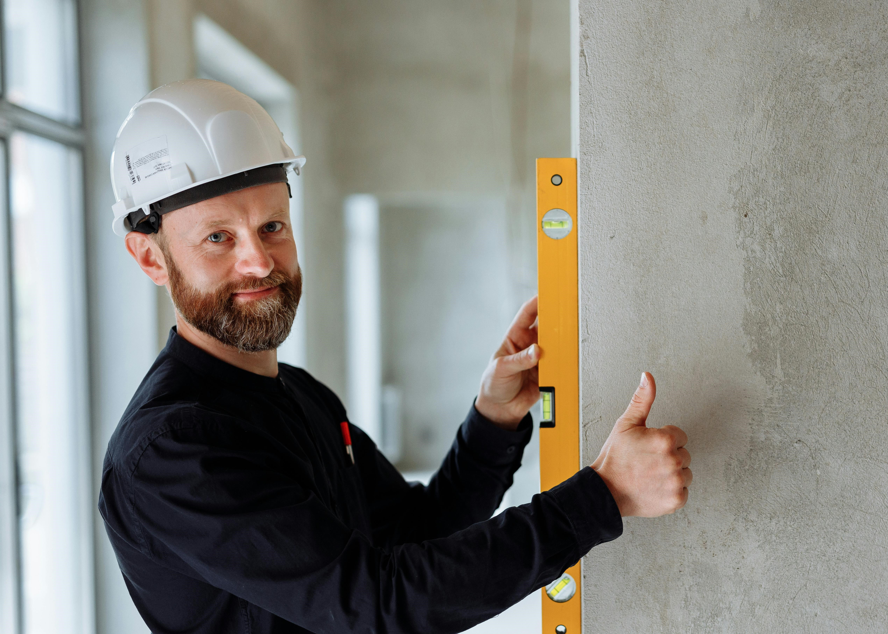
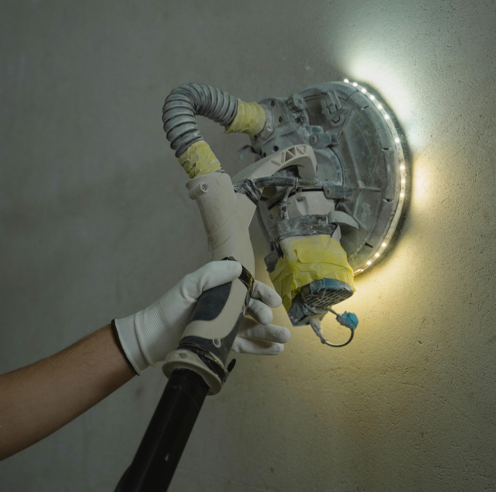

Trockenbau & abgehängte Decken
Professionelle Montage von Gipskarton, Decken und Trennwänden
Trockenbau mit Gipskarton
Wir realisieren präzise Trockenbaukonstruktionen mit sauberer Geometrie und perfektem Finish. Montage von Gipskartonwänden, Decken und Sonderkonstruktionen nach modernen Standards.
Bei der Planung berücksichtigen wir Schall- und Wärmedämmung, Technikführungen sowie Nischen für Beleuchtung und Einbauten.
- Exakte Geometrie & saubere Kanten
- CD/UD-Konstruktionen
- Vorbereitung für Technik & Beleuchtung
Trennwände & Nischen
Wir planen und montieren stabile Trennwände und funktionale Nischen mit präziser Ausrichtung nach Laser und Wasserwaage.
Dämmmaterial wird fachgerecht integriert, alle Übergänge werden armiert und mit Eckschutz versehen – für eine lange Lebensdauer.
- Trennwände mit Schall- & Wärmedämmung
- Nischen für TV, Vorhänge & Technik
- Verdeckte Revisionsöffnungen

Abgehängte Decken
Montage von ein- und zweistufigen Deckenkonstruktionen mit sauberen Schattenfugen und moderner Optik.
Wir bereiten die Decken für Spots, LED-Beleuchtung, Lichtlinien und Schienensysteme vor. Nach der Spachtelung entsteht eine perfekt ebene Fläche.
- Ein- & zweistufige Decken
- LED-, Spot- & Schienenvorbereitung
- Saubere Schattenfugen
Vorbereitung für den Endanstrich
Alle Fugen werden mit Armierungsband verstärkt, Eckschienen montiert und die Flächen mit Grund- und Feinspachtel bearbeitet.
Durch staubarmes Schleifen erhalten Sie eine glatte, ebene Oberfläche – bereit für Farbe oder Tapeten, ohne Wellen oder Übergänge.
- Armierung & Eckschutz
- Grund- & Feinspachtel
- Staubarmes Schleifen

Was ist im Service enthalten
- Aufmaß, Markierung und Montage nach Laser / Niveau
- Montage der Unterkonstruktion (CD / UD)
- Beplankung mit Gipskarton inkl. Zuschnitte
- Armierung der Fugen und Eckschutz
- Grund- und Feinspachtel, Schleifen
- Vorbereitung von Öffnungen für Licht & Technik
- Reinigung der Arbeitszone nach Abschluss
Zusätzliche Leistungen
- Schall- und Wärmedämmung
- LED-Nischen & Gardinenkästen
- Unsichtbare Revisionsklappen
- Grundierung und Anstrich von Decken & Wänden